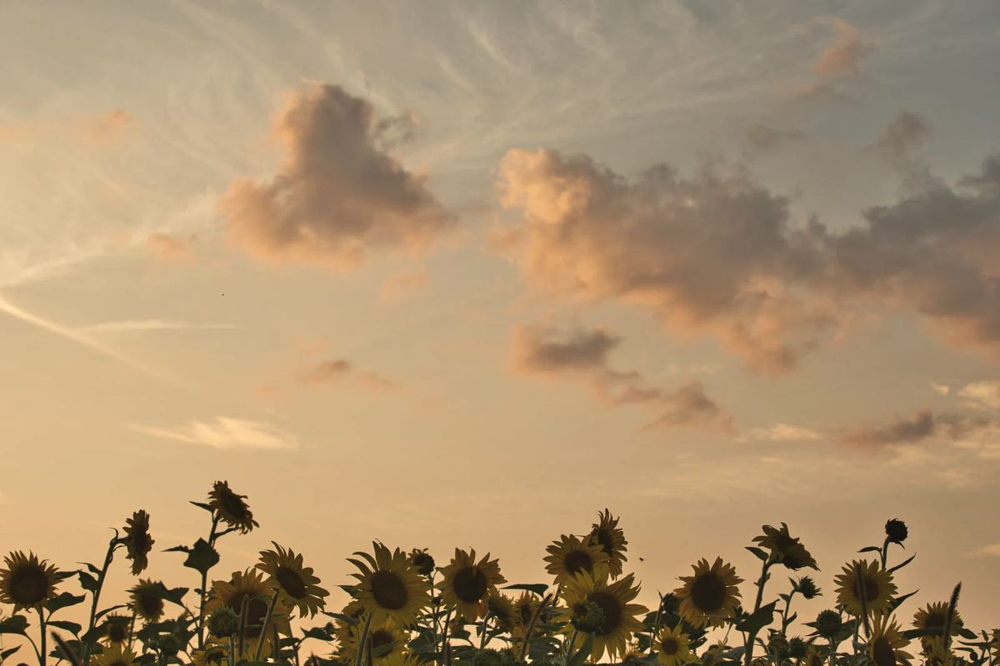

Соняшниковий мед — золотисто-жовтий, духмяний мед кінця літа. Його ми качаємо в серпні, коли над полями стоїть жовте море соняшників.
Це мед із нектару соняшника, однієї з головних польових культур України. Поля соняшників великі, тож у сезон цвітіння бджоли мають багато їжі. Соняшниковий мед — це літній мед із насиченим кольором і яскравим характером.
Соняшник цвіте в другій половині липня й у серпні, кілька тижнів. Скільки нектару він дасть, залежить від погоди й від гібриду: в одні роки медозбір чудовий, в інші слабший. Про те, чому мед щороку різний, читайте в чому мед щороку різний.
У ньому багато глюкози, а вона кристалізується легко. Уже за кілька тижнів після відкачки мед густішає, світлішає й часто стає крупнозернистим. Це нормальна властивість сорту, а не ознака підробки. Докладніше в статті про кристалізацію. Щоб повернути рідку консистенцію, поставте банку в теплу водяну баню, не вище 40 °C. А якщо любите густий мед, перемішуйте його, поки він густішає: вийде кремова текстура.
Соняшниковий мед містить фруктозу й глюкозу, ферменти, органічні кислоти, амінокислоти, мінерали та антиоксиданти, як і інші сорти. Це джерело швидкої енергії. Перелік компонентів є на сторінці «Користь меду».
У щільно закритій банці, у сухому прохолодному місці. Не лякайтеся, якщо мед затвердів: докладно в «Як зберігати мед».
Коли ви качаєте соняшниковий мед?
У серпні, коли відцвітає соняшник.
Чи нормально, що мед затвердів?
Так. Для соняшникового меду це звичайна властивість: він густішає за кілька тижнів.
Чим соняшниковий мед відрізняється від ріпакового?
ріпаковий мед білий і кремовий, збирається навесні. Соняшниковий золотистий і духмяний, збирається наприкінці літа. Порівняння всіх сортів: «Порівняння сортів».